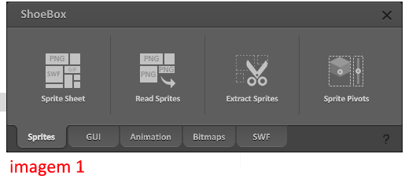

Documentação Hades
Destaques
• Programada totalmente com javascript;
• Templates de tela editaveis sem a necessidade de programador;
• Integrado ao adobe animate;
• Edição de layout sem a necessidade de programador;
• Funciona em desktop, tablet e smartphone;
Entendendo o ShoeBox
ShoeBox é um programinha gratuito que reúne varias imagens em uma só.
Baixa-lo é importante, pois ele é necessário para editar o layout da index, e para se gerar telas a partir do photoshop.
Link de download: LINK SHOEBOX
Usar o ShoeBox é bem simples, basta selecionar todas as imagens que vão compor o spritesheet, e arrasta-las para o ShoeBox na opção "Sprite Sheet" (imagem 1);

Após carregar as imagens, o programa exibira a imagem gerada (imagem 2), clique em "Settings" (apenas na primeira vez). Nas configurações, selecione o template pixi.js, e troque o File Name para assets.json (imagem 3);
Clique em Apply e depois Save. O ShoeBox irá gerar 2 arquivos "assets.png" e "assets.json", são eles que usaremos no curso.
Configurando o layout
parte 1
Para trocar qualquer elemento da API (index), vá até a pasta content/assets/assets e substitua o arquivo que desejar.
Após a substituição, passe TODAS as imagens da pasta pelo ShoeBox, e salve os dois arquivos gerados pelo programa na pasta content/assets substituindo o que já estiver na pasta.
parte 2
abra o curso, segure as teclas C+N+F+G, a tela de configuração irá se abrir, arraste os botões para onde desejar, ou desative-os (clicando sobre eles), também é possivel alterar a barra de progresso clicando sobre ela.
Após a edição, clique no botão pulsante, o sistema ira gerar um arquivo e fazer o download dele, salve esse arquivo na pasta content/engine/config arquivo config.js. Após isso, atualize o curso.
Configurando as telas
Todas as telas devem ser colocadas na pasta content/telas/'pastaDaTela'.
O arquivo da configuração das telas do curso esta na pasta content/engine/core arquivo DATA_CURSO.js
A estrutura do arquivo deve se manter como esta, podendo adicionar ou remover telas, modulos e lições. O arquivo é auto-explicativo.
IMPORTANTE, NÃO SE ESQUEÇA DE ESPECIFICAR QUANDO A TELA FOI FEITA NO ANIMATE, COMO NA IMAGEM 4
Debug
Para ativar o debug, segure as teclas D+B+U+G. Após isso as telas estarão desbloqueadas.
Gerando telas no photoshop
Na pasta content/_templates estão os templates prontos para transformar os arquivos exportados do photoshop em telas prontas (até o momento tem apenas 1, preciso dos scripts das telas hehe).
Nos arquivos de templates já tem as instruções de quais elementos são obrigatórios, e quais elementos podem ser inseridos.
Entenda como gerar esses elementos:
• no psd da tela, ative a opção Recurso de imagem (arquivo > gerar > Recurso de imagem);
• renomeie as camadas e/ou pastas de acordo com o nome do elemento (com o a extenção .png)
• ative a mascara em cada uma das camadas (imagem 5)
• salve o arquivo
• o photoshop irá salvar todas as camadas em arquivos pngs separados, pegue os arquivos, passe pelo ShoeBox, e coloque os arquivos gerados pelo ShoeBox + uma cópia do arquivo de template na pasta da tela
Gerando telas no animate
Exporte o arquivo do animate sempre com o nome de Tela (o animate vai gerar Tela.html, Tela.js e pode ter ou não uma pasta "imagens") (sempre com T maiusculo).
Não se esqueça de setar no arquivo DATA_CURSO.js que a tela é feita em animate.
Metodos que podem ser chamados no animate
-
Main.API.changePage(NUM);
Muda a tela do curso para a tela informada (NUM)
-
Main.API.enableNext();
Libera botão avançar do curso
-
Main.API.enableNext();
Libera botão avançar do curso
-
Main.API.menu.open();
Abre o menu do curso
-
Main.API.menu.close();
Fecha o menu do curso
(Se houver necessidade de mais funções disponiveis, é só falar)
Botões da API:
Main.API.btnMenu;
Main.API.btnHelp;
Main.API.btnFechar;
Main.API.btnAudio;
Main.API.btnNext;
Main.API.btnPrev;
Escondendo o botão:
botao.visible = false; (ou true para mostrar);
ex: Main.API.btnNext.visible = false